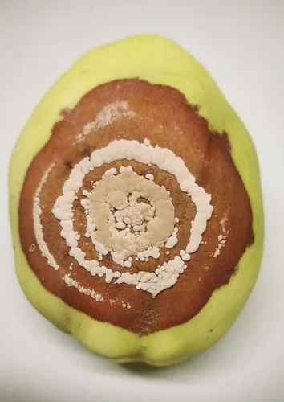
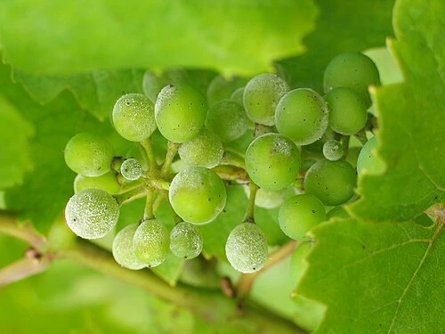
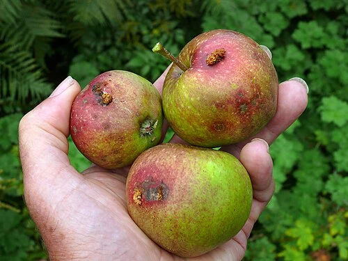
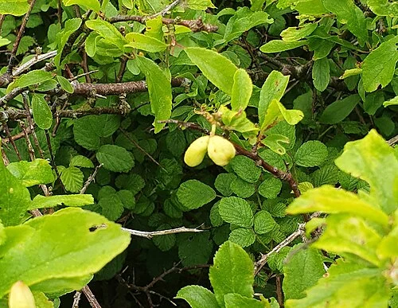
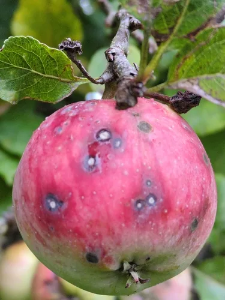
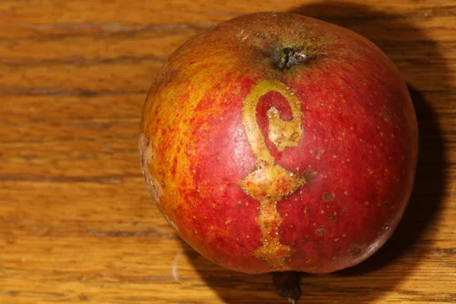
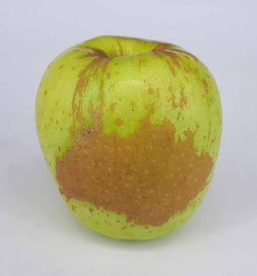
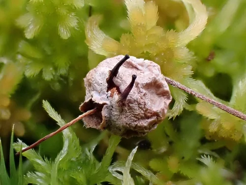
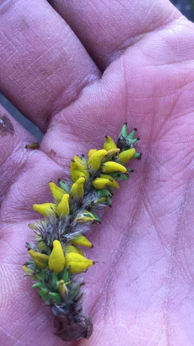

Fruit problems

Dark spots on fruitCompare spot placement, sunken areas and other fruit on the same plant.

Soft, rotting fruitCheck whether softening begins near cracks, the stalk or the point touching the ground.

Misshapen fruitCheck for one-sided development and note flowering-time weather and any leaf symptoms.

Shriveling fruitCheck the stalk and nearby foliage. Note whether softening or wrinkling appeared first.

Mold growing on fruitInspect tissue beneath the mold, crowding between fruit and bruised areas.

White powdery coating on fruitInspect the distribution and nearby leaves. Compare the normal waxy bloom of the cultivar with newly appearing irregular patches.

Black leathery ends on young tomatoesA dark patch at the flower scar often appears on the first fruit to set. Its position and the recent watering pattern help distinguish blossom-end rot from decay that starts elsewhere.

Uneven lobes and scars on tomato fruitA tomato can develop several unequal lobes around its flower scar. Notice when the shape first appears and whether the rest of the truss develops normally.

An apple tunnel leads to the seedsBrown crumbs outside an apple can hide an entrance much smaller than the damage inside. Follow the passage through one fallen fruit to see whether the seeds have been reached.

Young plums stretch into hollow pocketsUnripe plums that seem to be racing ahead of the rest can turn out to be nearly empty. The missing stone is easier to recognise before the pocket shrivels.

Tan cushions spread over a browning peachA ripening peach may soften around a small injury and then develop many tiny buff-coloured cushions. Check fruit in contact with it as well as the affected peach.

Olive patches turn corky on applesScab can leave a permanently rough patch on an apple and cause the growing skin to split. Leaf symptoms help connect an old fruit scar to the disease.

Pale-centred pits on grape berriesThe contrasting rim and centre of a small berry lesion can resemble an eye. Check fresh green shoots for another part of the same symptom pattern.

Clusters of spore tubes on hawthorn fruitLook for tiny white or pinkish tubes projecting from the fruit. As the tubes open, orange spores can dust the surface.

A winding ribbon scar crosses an appleA narrow feeding track made when an apple is tiny can grow into a broad corky ribbon. Check the younger fruitlets for signs of more recent injury.

Young pears swell rapidly and blackenA fruitlet that grows faster than all its neighbours after flowering may carry midge larvae. The inside of the pear reveals more than its unusual shape alone.

Red tongues protrude from alder conesA thin red blade growing out of an alder’s cone-like fruiting structure may be a fungal gall. Its attachment to a scale is the most useful detail to photograph.

Individual fruits swell in a carrot-family seed headA few inflated fruitlets can stand out on an otherwise normal carrot-family umbel. Count the individual swellings and identify the plant before naming the gall.

Dry bronze netting spreads over apple skinRough bronze skin can be characteristic of an apple variety or appear after conditions affecting the young fruit. The texture, distribution and cultivar all matter.

Cranberries contain white cottony tissuePoorly coloured berries may contain an unexpected white filling. Inspect fruit interiors together with the history of spring shoot damage in the same patch.

Pale swollen galls on corn earsIndividual kernels or part of an ear swell into pale, irregular sacs.

Individual capsules swell bright yellow in aspen catkinsOn a fruiting catkin of an aspen or grey poplar, look for swollen yellow capsules among normal ones. The change may affect a few individual fruits or transform much of the hanging catkin.

Tiny black pinpoints cluster on apple skinA smooth apple can develop groups of small black dots that look like pepper sprinkled over the peel. Look at their spacing and the condition of the skin underneath before interpreting them as insect damage.

Raised, corky craters on citrus peelA raised brown blemish on an orange or lime deserves a closer look when younger spots have a wet-looking edge or a yellow halo. Together these features can suggest citrus canker.

Dark, sharply edged spots on ripening citrusInspect citrus as the rind changes colour. Small dark speckles and larger hard-edged marks can occur together. Citrus black spot is one possible explanation, especially when several fruits show similar lesions.